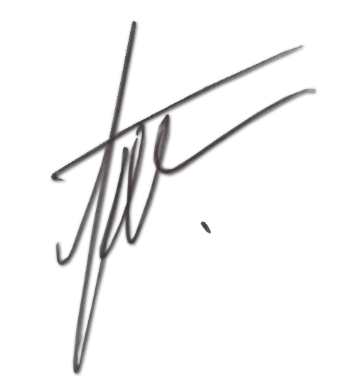

De nuestras consideraciones:
Reciban un cordial saludo de quienes hacemos Juan Uribe Recubrimientos Antiadherentes (JURA).
Somos una empresa con más de 18 años de trayectoria y alta experiencia, que presta servicios de
Recubrimientos Antiadherentes (TEFLON) en diversas industrias.
Los recubrimientos comúnmente conocidos como Antiadherentes, resuelven una amplia variedad de
problemas relacionados con la necesidad básica de contar con una superficie antiadherente, durable y de
fácil limpieza.
Algunas de las propiedades y bondades de los Recubrimientos Antiadherentes.
ANTI-ADHERENCIA. Evitar se adhiera el producto al molde.
BAJO COEFICIENTE DE FRICCIÓN. Los productos se deslizan fácilmente sin lubricantes.
ANTI-HUMECTANCIA. Mantiene los moldes secos y permanecen libre de corrosión.
RESISTENCIA A ALTAS TEMPERATURAS. Temperatura de 260°C. con picos de 315°C.
RESISTENCIA A BAJAS TEMPERATURAS. Bajas temperaturas hasta de –270 °C.
RESISTENCIA QUÍMICA. Son altamente resistentes (inertes) a casi todos los productos químicos.
RESISTENCIA DIELÉCTRICA. A través de modificaciones especiales, también pueden ser conductivos.
DURABILIDAD Y PROCESOS. Aumentan la durabilidad en piezas y/o partes de la maquinaria y/o equipos,
dando como resultado procesos más agiles por ende aumentar la productividad de la empresa.
Queremos ofrecerles nuestro servicio de Recubrimientos Antiadherentes (TEFLON) los cuales son
llevados a cabo por personal altamente capacitado y con una amplia experiencia, contamos con tecnología
de punta, lo que les da la garantía de un trabajo acorde a sus necesidades.

Ing. Juan Uribe
Gerente General